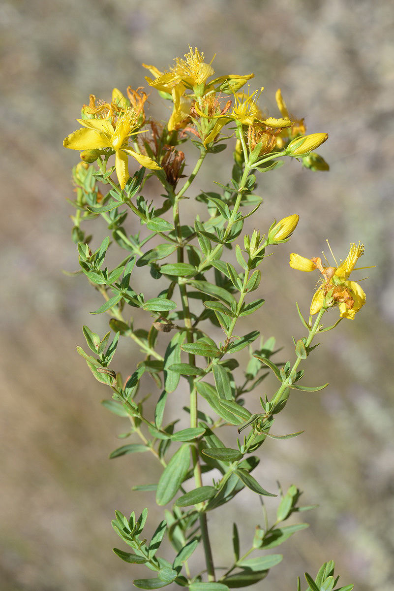

Hypericum perforatum (Lam.) DC.

Sinonímias botânicas: Hypericum nachitschevanicum Grossh.; Hypericum perforatum var. confertilora Debeaux; Hypericum perforatum var. microphyllum H. Lév.
Nome(s) populares: hipérico, erva-de-são-joão (BRASIL, 2016).
Indicação (LORENZI e MATOS, 2008; BRASIL, 2014; BRASIL, 2016):
- Casos depressivos leves a moderados (BRASIL, 2016): sua indicação como antidepressivo em quadros leves a moderados é a única aprovada pela ANVI-SA, sendo recomendado o uso de medicamentos fitoterápicos e a venda sob prescrição médica. A Instrução Normativa nº 2/2014 indica a dose diária de 0,9 a 2,7 mg do marcador químico.
- Adstringente
- Antisséptico
- Analgésico
- Asma e bronquite crônicas.
- Tosses
- Cefaleias
- Dores de origem reumática
- Ansiolítico
- Distúrbios da menopausa e síndrome pré-menstrual
- Estomatite
- Queimaduras, escoriações e ferimentos profundos
- Redutora de inflamações e promotora da cicatrização – ferimentos e aftas
Precauções e advertências de uso: não recomendável para pacientes com depressão crônica (LORENZI e MATOS, 2008). Em caso de alergias, suspender a administra-ção. Uso não recomendado na gravidez e na lactação por poder inibir a secreção de prolactina. Evitar exposição ao sol ou raios ultravioletas sem proteção, devido ao efei-to fotossensibilizante. Administrar após as refeições para minimizar as reações adver-sas gastrointestinais (BRASIL, 2016).
Prescrição: apresentação obrigatória (BRASIL, 2014)
Farmacógeno: planta inteira com sumidades floridas (BRASIL, 2016)
Modo de preparo: Infusão: 15 a 30 g por litro.
Via(s) de administração e posologia: Oral: utilizar 2 a 3 xícaras ao dia.
Interações: é um indutor enzimático (CYP3A4 e glicoproteína-P, envolvidos no meta-bolismo e distribuição da maioria dos fármacos) (WILLIAMSON et al., 2012), portanto pacientes que utilizam extratos de H. perforatum devem ter precaução na coadminis-tração de outros medicamentos que utilizem a mesma rota (SIMÕES et al., 2010). Dessa forma, recomenda-se avaliação individual do quadro clínico do paciente para verificar a necessidade do uso de H. perforatum, monitoramento da terapia e ajuste das doses dos medicamentos quando necessário.
- Ácido 5-aminolevulínico: fototoxicidade.
- Alimentos ricos em tiramina: sem evidências relevantes.
- Amiodarona: redução dos níveis plasmáticos da amiodarona. Importância maior (CIM-RS, 2006).
- Anestésicos: pode prolongar o efeito anestésico e provocar hipotensão (WIL-LIAMSON et al., 2012), colapso cardiovascular e atraso do efeito anestésico. Importância maior (CIM-RS, 2006).
- Antidepressivos tricíclicos: amitriptilina e nortriptilina (CIM-RS, 2006) podem ter seus níveis plasmáticos reduzidos (WILLIAMSON et al., 2012) e risco de síndrome serotoninérgica quando não houver interação metabólica. Importân-cia moderada (CIM-RS, 2006).
- Antiepiléticos: pode ocorrer redução na concentração plasmática do antiepilé-tico Interação moderada (CIM-RS, 2006; WILLIAMSON et al., 2012).
- Benzodiazepínicos: risco de redução dos níveis plasmáticos e na efetividade dessa classe. Interação moderada (CIM-RS, 2006; WILLIAMSON et al., 2012).
- Bloqueadores do canal de cálcio (nifedipina, verapamil): pode ocorrer redução da biodisponibilidade dos bloqueadores do canal de cálcio. Interação modera-da (CIM-RS, 2006). É possível monitorar pressão arterial e frequência cardía-ca, e se necessário ajustar doses (WILLIAMSON et al., 2012).
- Bupropriona: risco de síndrome serotoninérgica (WILLIAMSON et al., 2012).
- Buspirona: risco de síndrome serotoninérgica ou hipomania. Interação mode-rada (CIM-RS, 2006; WILLIAMSON et al., 2012).
- Cafeína: metabolismo pode ser aumentado em uso concomitante de hipérico (WILLIAMSON et al., 2012).
- Ciclosporina: risco de redução plasmática acentuada pelo uso de hipérico, ris-co de rejeição ao transplante. Ao interromper o uso de hipérico, o fármaco tem seu metabolismo normalizado em um período que pode variar entre 2 a 3 se-manas. Interação maior (CIM-RS, 2006; WILLIAMSON et al., 2012).
- Clorzoxazona: pode ter sua eliminação aumentada pelo uso de hipérico.
- Clozapina: pode ter níveis plasmáticos e eficácia reduzida pelo uso de hipéri-co. Interação moderada (CIM-RS, 2006).
- Contraceptivos hormonais: alteração na farmacocinética do desogestrel, etini-lestradiol e noretisterona (WILLIAMSON et al., 2012). Risco de falha na eficá-cia; risco de hemorragia uterina e sangramento intermenstrual devido à dimi-nuição das concentrações de etinilestradiol. Importância maior (CIM-RS, 2006; WILLIAMSON et al., 2012).
- Digoxina: preparações com hipérico podem reduzir os níveis plasmáticos de digoxina em aproximadamente um quarto à um terço pela diminuição da ab-sorção intestinal dos glicosídeos cardioativos através da indução da glicoprote-ína P. Importância maior (CIM-RS, 2006; SIMÕES et al., 2010; WILLIAMSON et al., 2012).
- Eplerenona: pode ter sua concentração plasmática levemente reduzida pelo hipérico (WILLIAMSON et al., 2012).
- Estatinas: o hipérico reduz moderadamente os níveis plasmáticos da atorvas-tatina e da sinvastatina. Não reduziu os níveis da pravastatina Importância moderada (CIM-RS, 2006; WILLIAMSON et al., 2012).
- Etoposídeo: evidências in vitro sugerem que é prudente evitar o uso concomi-tante de hipérico porque um de seus componentes, a hipericina, pode antago-nizar o efeito do citotóxico do etoposídeo e pode também estimular seu meta-bolismo hepático. Interação maior (CIM-RS, 2006; WILLIAMSON et al., 2012).
- Fexofenadina: pode ter sua concentração plasmática reduzida (WILLIAMSON et al., 2012).
- Hipoglicemiantes orais e insulina: redução moderada da concentração de gli-clazida e da rosiglitazona. Com pioglitazona e a repaglinida podem ocorrer efeitos semelhantes por serem metabolizadas da mesma forma. Interação moderada (CIM-RS, 2006; WILLIAMSON et al., 2012).
- Imatinibe: pode ocorrer redução dos níveis séricos do fármaco. Interação mai-or (CIM-RS, 2006; WILLIAMSON et al., 2012).
- Inibidores da bomba de prótons: o hipérico induz o metabolismo do omeprazol, e este pode ter sua eficácia reduzida. Importância moderada (CIM-RS, 2006; WILLIAMSON et al., 2012).
- Inibidores da protease: pode causar redução dos níveis séricos de indinavir, in-terferindo no tratamento de pacientes com HIV (WILLIAMSON et al., 2012). Metabolismo normal após 2 a 3 semanas sem o uso de hipérico. Importância maior (CIM-RS, 2006).
- INNTRs: sugere-se, através de evidências, que ocorre redução nos níveis de nevirapina pelo hipérico (WILLIAMSON et al., 2012).
- Irinotecano: pode reduzir os níveis plasmáticos do seu metabólito ativo, por aumentar o metabolismo do fármaco (WILLIAMSON et al., 2012).
- IRSN: risco de síndrome serotoninérgica (WILLIAMSON et al., 2012).
- ISRS: risco de síndrome serotoninérgica, sedação severa e distúrbios mentais. Importância maior (CIM-RS, 2006; WILLIAMSON et al., 2012).
- Ivabradina: tem seu metabolismo aumentado pelo hipérico, reduzindo sua concentração plasmática para menos da metade (WILLIAMSON et al., 2012).
- Lítio: um relato descreveu distúrbios mentais em um paciente tratado com lítio e em uso de hipérico. Embora seja provável que o efeito descrito tenha sido ocasionado pelo efeito conjunto sobre a serotonina, não é possível afirmar a interação pela falta de informações e dados relevantes (WILLIAMSON et al., 2012).
- Loperamida: Delírio com sintomas de confusão, agitação e desorientação (CIM-RS, 2006). WILLIAMSON et al. (2012) citam o caso de delírio em paci-ente do sexo feminino que associou loperamida + hipérico + valeriana Impor-tância moderada (CIM-RS, 2006).
- Metadona: redução dos níveis do fármaco e aumento dos riscos de sintomas de retirada. Interação moderada (CIM-RS, 2006).
- Metilfenidato: um caso relata a redução da eficácia do fármaco em tratamento concomitante com hipérico, seguida por maior eficácia do metilfenidado ao in-terromper o uso do hipérico (WILLIAMSON et al., 2012).
- Opioides: o hipérico reduz a concentração plasmática da metadona, podendo ocorrer sintomas de abstinência. Espera-se o mesmo efeito para buprenorfina, fentanil e alfentanil (WILLIAMSON et al., 2012).
- Procainamida: um estudo experimental em camundongos indica que o hipéri-co pode elevar a biodisponibilidade da procainamida (WILLIAMSON et al., 2012).
- Tacrolimo: ocorre redução dos níveis séricos do fármaco (WILLIAMSON et al., 2012).
- Talinolol: o hipérico reduz moderadamente a concentração plasmática do tali-nolol (WILLIAMSON et al., 2012).
- Teofilina: Redução dos níveis plasmáticos e perda do efeito broncodilatador (CIM-RS, 2006). Segundo WILLIAMSON et al. (2012), em um estudo com pacientes saudáveis, não foi encontrada nenhuma interação farmacocinética, mas um caso isolado relata a diminuição dos níveis séricos de teofilina em um paciente do sexo feminino que utilizou hipérico. Ao interromper o uso da planta medicinal, os níveis séricos dobraram. Importância moderada (CIM-RS, 2006)
- Tibolona: relato de caso isolado de dano hepático em tratamento para sinto-mas pós-menopausa (paciente também utilizava hidroxicloroquina) (WILLI-AMSON et al., 2012).
- Triptanos: potencialização dos efeitos serotoninérgicos e possível aumento dos efeitos adversos (por exemplo, vasoconstrição cerebral). Importância mode-rada CIM-RS, 2006; WILLIAMSON et al., 2012).
- Varfarina e fármacos anticoagulantes: pode causar uma redução moderada nos efeitos anticoagulantes da femprocumona e da varfarina pelo aumento de sua eliminação e redução dos níveis plasmáticos. Importância maior (CIM-RS, 2006; WILLIAMSON et al., 2012).
- Voriconazol: ocorre aumento da absorção nas doses iniciais de voriconazol, e redução da concentração plasmática do fármaco a longo prazo.
- Testes laboratoriais: não parece interferir em testes de detecção quali e/ou quantitativa de carbamazepina, ciclosporina, digoxina, fenobarbital, fenitoína, procainamida, quinidina, tacrolimo, teofilina, antidepressivos tricíclicos e val-proato (WILLIAMSON et al., 2012).
Efeitos adversos: fotossensibilidade, irritações gastrointestinais, reações alérgicas, fa-diga e agitação, boca seca (ANMAT, 2009; BRASIL, 2016). Recomenda-se a admi-nistração após as refeições para minimizar as reações adversas gastrointestinais (BRASIL, 2016).
Superdosagem: não foram encontrados relatos na literatura científica revisada.
Classes químicas:
- Marcador: hipericinas totais expressas em hipericina (BRASIL, 2014)
- Óleo essencial: mono e sesquiterpenos, cetona e álcoois alifáticos. (Williamson et al., 2012)
- Derivados antracênicos, mais especificamente naftodiantronas (hipericina, is-so-hipericina, pseudo-hipericina, proto-hipericina, protopseudo-hipericina e ci-clopseudo-hipericina);
- Floroglucinóis prenilados (hiperforina e adiperforina)
- Flavonoides (canferol, quercetina, luteolina, hiperosídeo, isoquercetrina, quer-cetrina e rutina;
- Biflavonoides (biapigenina e amentoflavona)
- Catequinas
- Outros constituintes fenóicos: ácidos cafeico e clorogênico
- Óleo volátil contendo metil-2-octano